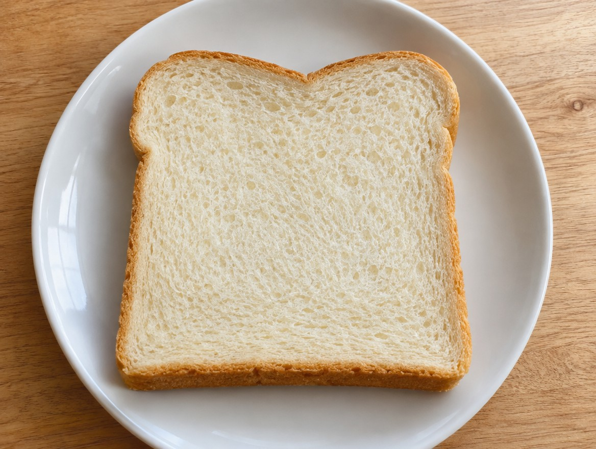
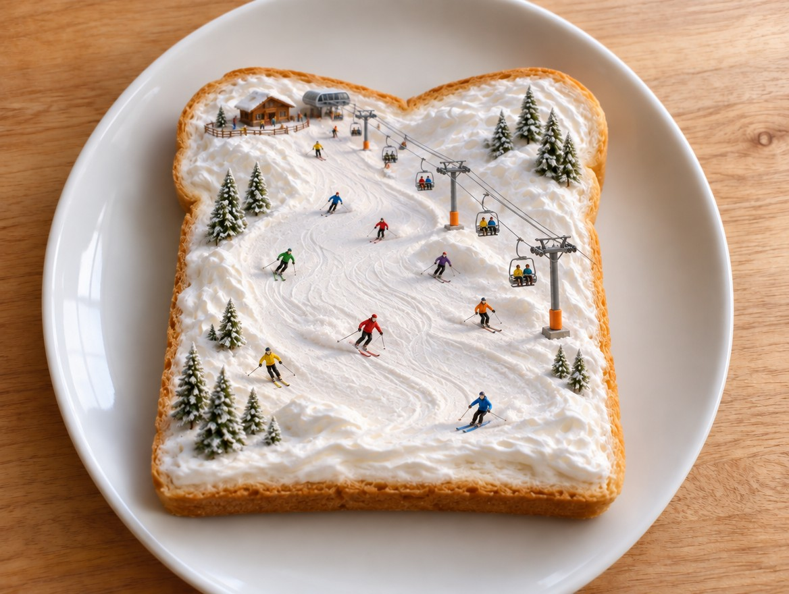
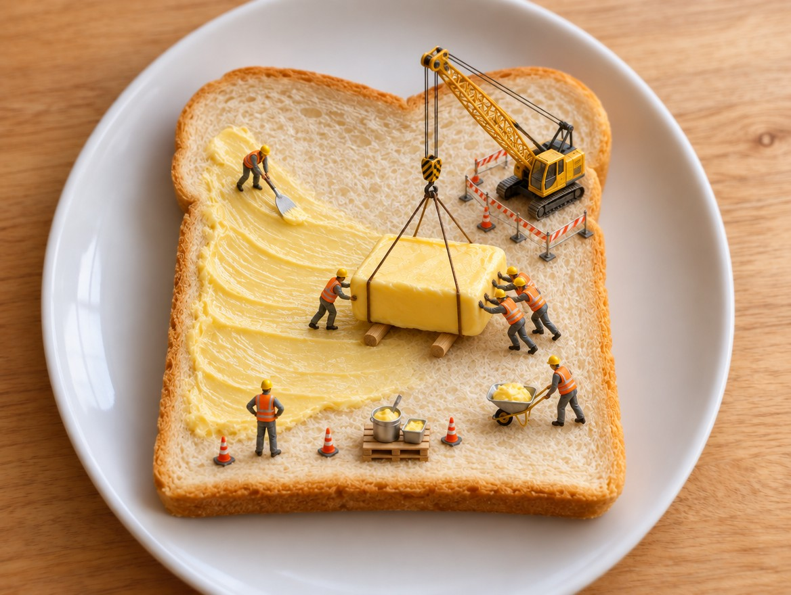
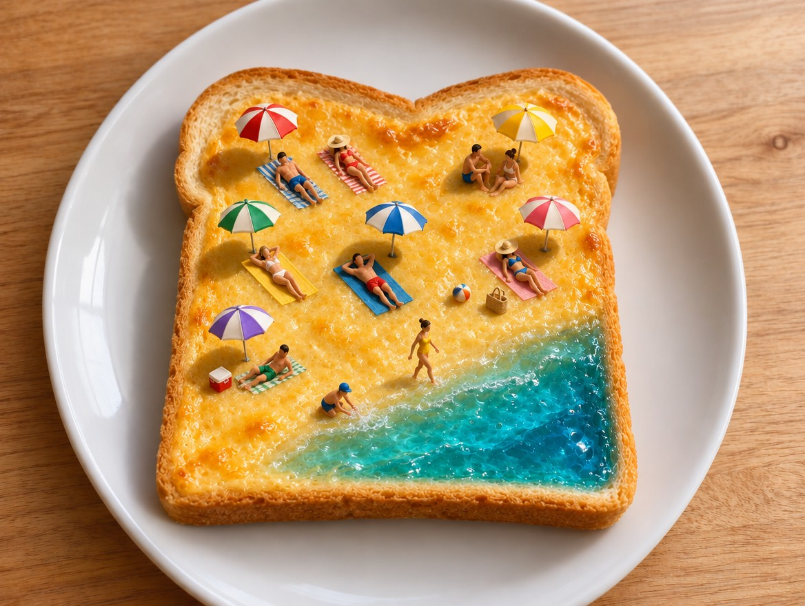
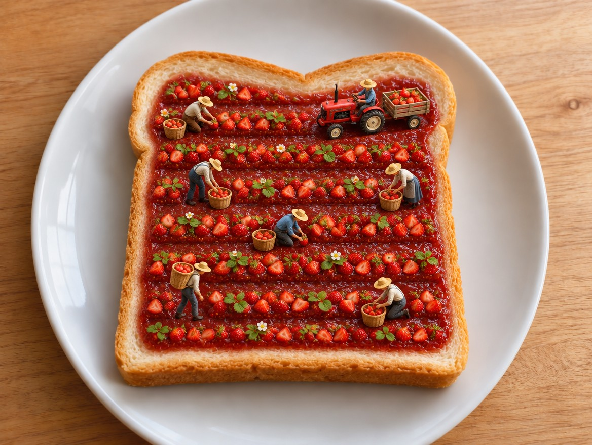
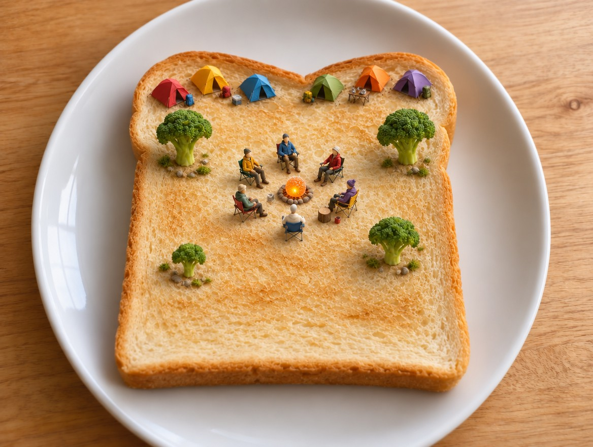

AI 문방구 · 식빵 미니어처 5
식빵 한 장
→ 미니어처 세상 5
댓글로 신청해주셔서 고마워요. 영상 속 미니어처는 전부 힉스필드(GPT Image 2.6)에 식빵 사진 한 장을 넣고 토핑과 장면 문장만 바꿔 만든 결과예요. 카페 메뉴 사진이나 SNS 피드에 써보세요.
BASE원본 식빵 사진 (전)

01Ski slope
크림 눈밭
생크림 슬로프에 스키 타는 작은 사람들과 리프트.
전

후The exact same slice of white bread on the same round white plate on the same wooden table, same framing and angle. Now the bread is covered with a thick layer of white whipped cream like a snowy ski slope, and tiny miniature model people (1:87 scale figurines, faceless generic) are skiing down it, tiny ski lift poles, tiny pine trees. Tilt-shift miniature diorama photography, realistic, no text, no logos.
02Construction
버터 나르기
노란 안전모 인부들이 버터를 옮기는 공사장.
전

후The exact same slice of white bread on the same round white plate on the same wooden table, same framing and angle. Now it is a miniature construction site: tiny model workers in yellow helmets and orange vests (1:87 scale figurines, faceless generic) carry and push a big pat of yellow butter, tiny crane and wheelbarrow, butter partly spread. Tilt-shift miniature diorama photography, realistic, no text, no logos.
03Beach
치즈 모래사장
녹은 치즈 해변에 파라솔과 젤리 바다.
전

후The exact same slice of white bread on the same round white plate on the same wooden table, same framing and angle. Now the bread is topped with a melted golden cheese slice like a sandy beach, tiny miniature people sunbathing on towels, tiny colorful beach umbrellas, a small blue jelly pool like the sea in one corner. 1:87 scale faceless figurines, tilt-shift miniature diorama photography, realistic, no text, no logos.
04Farm
딸기잼 밭
딸기잼 이랑에서 딸기 따는 농부와 빨간 트랙터.
전

후The exact same slice of white bread on the same round white plate on the same wooden table, same framing and angle. Now the bread is spread with red strawberry jam in neat rows like a farm field, fresh strawberry pieces as crops, tiny miniature farmers with straw hats and baskets harvesting, a tiny red tractor. 1:87 scale faceless figurines, tilt-shift miniature diorama photography, realistic, no text, no logos.
05Camping
빵 언덕 텐트
빵 가장자리에 줄지은 텐트와 브로콜리 숲.
전

후The exact same slice of white bread on the same round white plate on the same wooden table, same framing and angle, lightly toasted. Now it is a miniature campsite: a row of tiny colorful tents along the bread crust ridge, a tiny campfire made of an orange candy, tiny campers sitting around, small broccoli florets as trees. 1:87 scale faceless figurines, tilt-shift miniature diorama photography, realistic, no text, no logos.
HOW내 사진으로 하는 법
음식을 위에서 내려다본 사진을 올리고 [ ]만 바꾸세요. "1:87 scale figurines"와 "tilt-shift"가 들어가야 진짜 미니어처처럼 보여요. 식빵 대신 케이크, 피자, 밥 위에 해도 돼요.
The exact same [음식] on the same plate, same framing and angle. Now it is a miniature [장면]: [토핑 묘사], tiny miniature people [하는 일]. 1:87 scale faceless figurines, tilt-shift miniature diorama photography, realistic, no text, no logos.